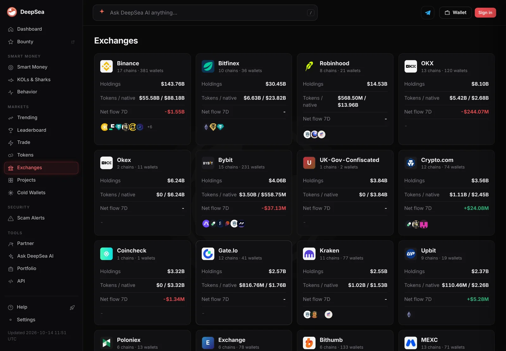
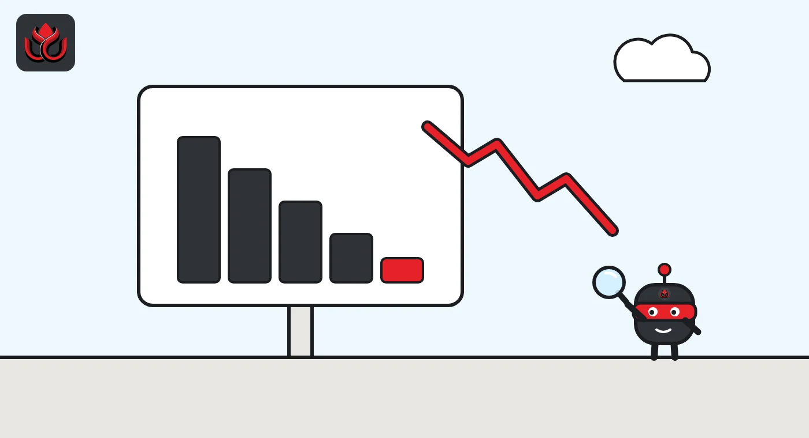
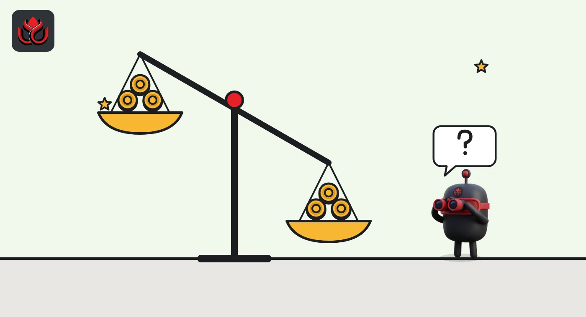

Asian exchanges lost $11.95 billion in three weeks, most of it USDT leaving Binance
DeepSea's data shows a steady stablecoin exodus from Asian exchanges starting September 28, weeks before Binance was hacked. Western exchanges barely moved, while smaller dollar tokens began to swing.
Key points
- Asian exchanges lost a net $11.95 billion in the three weeks from September 28 to October 18, DeepSea's data shows.
- Binance alone lost $4.69 billion net in the week to October 11 and $2.12 billion in the week to October 18, mostly USDT on Tron.
- US and European exchanges ended each week close to flat, while RLUSD and USDe swung between net deposits and net withdrawals.
 What DeepSea's data shows
What DeepSea's data shows
DeepSea tracks labeled exchange wallets on Ethereum, Tron, Base, Arbitrum, Avalanche and Polygon. Its weekly reports show Asian exchanges losing a net $5.00 billion in the week of September 28 to October 4, $4.75 billion from October 5 to 11 and $2.20 billion from October 12 to 18. That adds up to $11.95 billion more withdrawn than deposited in three weeks. These are DeepSea's own figures.
Binance carried most of it. DeepSea's report for October 5 to 11 shows Binance at minus $4.69 billion, with $612.91 million in and $5.31 billion out, about 99% of the Asian total that week. The next week Binance was minus $2.12 billion. Stablecoins made up 93% and 92% of Asian volume in those two weeks, and almost all of the outflow was USDT on Tron.
The bleeding had not fully stopped by November 2. DeepSea's exchanges page showed Binance holding $147.81 billion across 392 tracked wallets, with a net flow of minus $1.55 billion over the past seven days.

Data: DeepSea (desea.io), checked November 1, 2026, 11:35 p.m. ET.
What happened
Asian crypto exchanges lost a net $11.95 billion in the three weeks from September 28 to October 18, according to DeepSea's on-chain data. Most of it was USDT, Tether's stablecoin, leaving Binance on the Tron blockchain.
An outflow means more money left an exchange for outside wallets than came in. It can mean traders are pulling cash out to use elsewhere, or simply that funds are moving between platforms and DeFi apps.
The outflow was large and steady. DeepSea's data shows a net minus $1.14 billion on October 5 alone, followed by daily outflows of $800 million to $900 million for the next three days. The pace then eased. On October 18, DeepSea recorded a small net inflow of $9.92 million, the only positive day in the two weeks its reports show day by day.
The money was mostly dollars. USDT accounted for minus $4.74 billion of the Asian outflow in the week to October 11 and minus $2.16 billion in the week to October 18. By chain, Tron alone showed minus $4.70 billion and minus $2.05 billion in those two weeks.
Binance versus everyone else
Binance dominated both weeks. In the week to October 11, DeepSea counted 911,242 withdrawals from Binance against 272,703 deposits. Other large Asian venues were close to balanced: OKX finished at minus $28.17 million on about $3 billion each way, and Bybit at plus $4.08 million.
The second week looked similar. DeepSea shows Binance at minus $2.12 billion, Bybit at minus $137.57 million and OKX at plus $83.90 million.
Western exchanges moved more money but went nowhere. US, European and Latin American venues ended at minus $719,500, minus $111.36 million and plus $65.09 million over the three weeks.
Net flow into Asian exchanges by week
US$ billion
Source: DeepSea weekly reports for October 5 to 11 and October 12 to 18. Labeled wallets on six chains; BSC not covered.

RLUSD and USDe: the smaller dollars
Below USDT, two other dollar tokens moved in opposite directions. In the week to October 11, DeepSea shows USDe, Ethena's synthetic dollar, as the top net deposit token into Asian exchanges at plus $33.03 million. Ripple's RLUSD went the other way at minus $14.66 million.
A week later they swapped places. DeepSea reports RLUSD as the largest net deposit into Asian exchanges, plus $43.80 million on $58.39 million in and $14.60 million out. USDe turned to a net withdrawal of $14.55 million. RLUSD also posted net deposits of $4.03 million at US and European venues that week.
Ondo's tokenized Treasury product USDY drew steady net deposits of $14.33 million and $15.25 million in the two weeks.
What came next
DeepSea's weekly reports stop at October 18, so there is no weekly data for the 11 days before Binance's hot wallets were drained on October 29. In its October 30 recovery update, Binance said the loss was about $6.3 billion and that it will cover all stolen funds from its SAFU fund and corporate treasury. It also said it had set aside more than $6.34 billion and planned a fresh proof of reserves.
Binance has not yet published that report. In a November 1 update, it said the snapshot was taken at 8:00 p.m. ET on October 30 and the report was expected on its proof of reserves page on November 2.
The same post shows the outflow picking up again once withdrawals reopened. Binance began restoring withdrawals in phases at 1:00 a.m. ET on November 1. By 10:30 a.m. ET, it had processed $4.649 billion of withdrawals against $1.01 billion of deposits, a net outflow of about $3.64 billion. Binance said that was 2.1% of its $171 billion in assets under management, based on proof of reserves data as of October 28, and that withdrawal volumes were stabilizing after an early spike.

LC Insight analysis
This section is our reading of the facts above, not a statement of fact.
- The size and timing point to large holders moving stablecoins out of Binance on Tron, not a broad retail run. Withdrawals ran into the hundreds of thousands, but a dollar total this large on one chain and one token suggests big tickets did most of the work.
- The early October exodus happened weeks before the October 29 breach, so it was not a reaction to it. It does mean Binance entered the incident with less stablecoin in its tracked wallets than a month earlier.
- Watch the smaller tokens. RLUSD's jump to top deposit token suggests some traders are spreading dollar holdings across more issuers, a trend that could grow after issuers froze stolen stablecoins at speed in the Binance case.
What's next
- DeepSea's first weekly report covering October 19 onward
- Binance's report on its October 30 proof of reserves snapshot
- Whether Binance's seven-day net flow on DeepSea turns positive now that withdrawals are reopening
Disclaimer. This article is based on public information and the sources listed below as of the update time shown. It is for information only and is not investment, legal or tax advice. Figures may change as companies and authorities publish new data.
Sources
- DeepSea, Weekly Smart Money & Global Money Flows Report, October 5 to 11, 2026
- DeepSea, Weekly Smart Money & Global Money Flows Report, October 12 to 18, 2026
- DeepSea, Exchanges (checked November 2, 2026)
- Binance on X, Security Incident Recovery Update #2 (October 30, 2026)
- Binance on X, withdrawal and proof of reserves update (November 1, 2026)